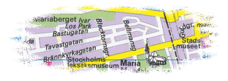

Södermalm i tid och rum. Stockholm
Bellmansgatan norr om Hornsgatan
Brännkyrkagatan öster om Torkel Knutssonsgatan
Hornsgatan öster om Torkel Knutssonsgatan

Bellmansgatan norr om Hornsgatan
Brännkyrkagatan öster om Torkel Knutssonsgatan
Hornsgatan öster om Torkel Knutssonsgatan
